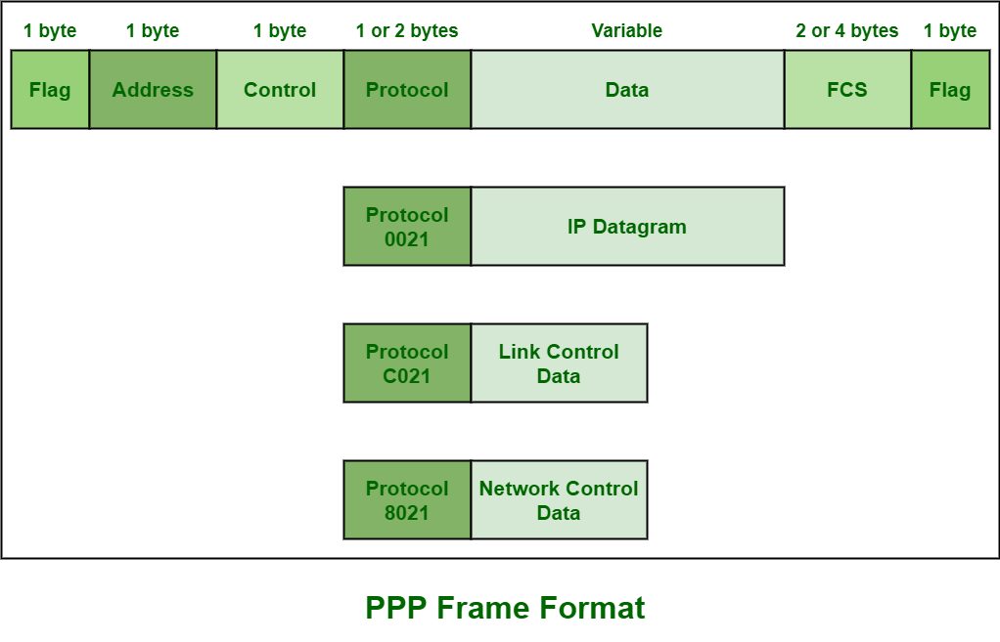
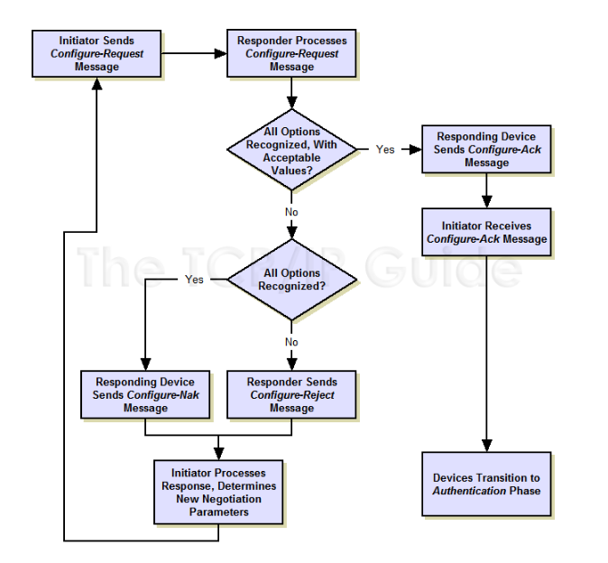
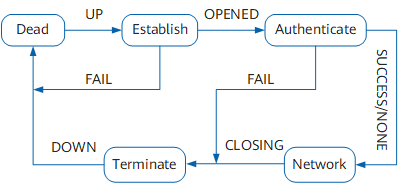
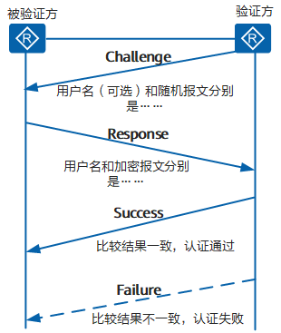
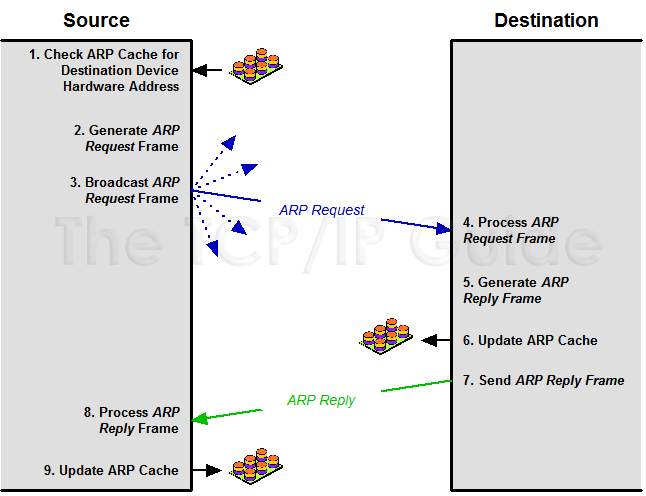

网络技术¶
物理层¶
链路层¶
链路层提供“信道”，各段链路组成端到端的通信路径。有两种信道：
- 广播信道：多个发送和接收节点连接到相同、单一、共享广播信道上。以太网 Ethernet 和无线局域网 WLAN。
- 点对点通信链路：单个发送和接收方。点对点协议 PPP。
概述¶
基本概念：
- 帧 Frame
- MAC 媒体访问控制 Medium Access Control
- 多路访问协议 multiple access protocol
- 信道划分协议 channel partitioning protocol
- 时分多路复用 Time Division Multiplexing
- 频分多路复用 Frequency Division Multiplexing
- CDMA 码分多址 Code Division Multiple Access：具有不同节点能够同时传输的特性
- 随机接入协议 random access protocol：全速发送，碰撞重传，随机等待
- CSMA 载波侦听多路访问 Carrier Sense Multiple Access
- CSMA/CD 具有碰撞检测的载波侦听多路访问 CSMA with Collision Detection
- 轮流协议 taking-turns protocol
- 轮询协议 polling protocol：主节点轮询决定
- 蓝牙
- 令牌传递协议 token-passing protocol
- 轮询协议 polling protocol：主节点轮询决定
- 信道划分协议 channel partitioning protocol
- MAC 地址 MAC address
- 6 字节
- IEEE 管理 MAC 地址空间，分配前 24 比特
- 广播地址
FF-FF-FF-FF-FF-FF
实现：
- NIC 的核心是链路层控制器。比如有线网卡实现以太网控制器、无线网卡实现 802.11 WiFi 协议。
Ethernet¶
Quote
Ethernet 以太网
以太网向网络层提供无连接、不可靠服务。
以太网技术¶
以太网不是单一协议标准，而是有多种技术：
- 10BASE-T
- 100BASE-T
- 1000BASE-LX
- 10GBASE-T
这些技术被 IEEE 802.3 标准化。
以太网历史¶
- 早期以太网采用总线型拓扑，同轴电缆总线连接各节点
- 20 世纪 90 年代采用基于集线器的星形拓扑，集线器位于物理层，重新生成比特并向所有接口传输
- 21 世纪以来采用基于存储转发分组交换机的星形拓扑
现代交换机是全双工的，任何时候绝不会向相同接口转发超过一个帧。在这种局域网中，不需要使用 MAC 协议。
以太网帧格式才是以太网标准一个真正重要的特征。
存储转发分组交换机¶
- 过滤 filtering：决定转发到某个接口还是丢弃
- 转发 forwarding：决定帧转发到哪个接口
这些功能基于交换机表 switch table，表项包含：MAC 地址、对应接口、放置时间。交换机表通过自学习建立。
虚拟局域网 VLAN¶
由 802.1Q 扩展以太网帧格式定义。
PPP¶
PPP 点对点协议 Point-to-Point Protocol
Quote
PPP 诞生的目的是为了封装三层网络协议，使得两个节点之间的通信可以跨越不同的物理链路。
PPP 组成部分¶
PPP 由两个部分组成：
- LCP 链路控制协议 Link Control Protocol：
- 建立、配置、测试链路
- 包括认证、错误检测、多路复用、环回检测等功能
- NCP 网络控制协议 Network Control Protocol：配置网络层协议


Wikipedia, Huawei
PPP 帧格式¶
{kind=link}

GeeksforGeeks
LCP¶
LCP 链路控制协议 Link Control Protocol
当 PPP 帧 Protocol 字段为 0xC021 时，表示 LCP 协议。

The TCP/IP Guide
{kind=link}

The TCP/IP Guide
PPP 建链过程¶
{kind=link}

Huawei
PPP 运行的过程简单描述如下：
- 通信双方开始建立 PPP 链路时，先进入到 Establish 阶段。
- 在 Establish 阶段，PPP 链路进行 LCP 协商。协商内容包括工作方式是 SP（Single-link PPP）还是 MP（Multilink PPP）、最大接收单元 MRU（Maximum Receive Unit）、验证方式和魔术字（magic number）等选项。LCP 协商成功后进入 Opened 状态，表示底层链路已经建立。
- 如果配置了验证，将进入 Authenticate 阶段，开始 CHAP 或 PAP 验证。如果没有配置验证，则直接进入 Network 阶段。
- 在 Authenticate 阶段，如果验证失败，进入 Terminate 阶段，拆除链路，LCP 状态转为 Down。如果验证成功，进入 Network 阶段，此时 LCP 状态仍为 Opened。
- 在 Network 阶段，PPP 链路进行 NCP 协商。通过 NCP 协商来选择和配置一个网络层协议并进行网络层参数协商。只有相应的网络层协议协商成功后，该网络层协议才可以通过这条 PPP 链路发送报文。
- NCP 协商包括 IPCP（IP Control Protocol）、MPLSCP（MPLS Control Protocol）等协商。IPCP 协商内容主要包括双方的 IP 地址。
- NCP 协商成功后，PPP 链路将一直保持通信。PPP 运行过程中，可以随时中断连接，物理链路断开、认证失败、超时定时器时间到、管理员通过配置关闭连接等动作都可能导致链路进入 Terminate 阶段。
- 在 Terminate 阶段，如果所有的资源都被释放，通信双方将回到 Dead 阶段，直到通信双方重新建立 PPP 连接，开始新的 PPP 链路建立。
CHAP¶
CHAP 挑战 - 应答认证协议 Challenge-Handshake Authentication Protocol
CHAP 验证协议为三次握手验证协议。它只在网络上传输用户名，而并不传输用户密码，因此安全性要比 PAP 高。
{kind=link}

Huawei
IPCP¶
IP 控制协议 IP Control Protocol
IPCP 是 PPP 的一个 NCP，用于配置 IPv4 协议。协商内容包括 IP 地址、DNS 服务器地址等。

The TCP/IP Guide
链路层和网络层间：ARP¶
Quote
ARP 地址解析协议 Address Resolution Protocol
{kind=link}

The TCP/IP Guide
ARP 类型¶
- 动态 ARP：通过 ARP 报文生成和维护
- 静态 ARP：手动配置，不会被动态 ARP 覆盖
- 免费 ARP：主动使用自己的 IP 地址作为目的地址发送 ARP 请求
- IP 地址冲突检测
- 通告新 MAC 地址
ARP 代理¶
Quote
一般情况下，不应当开启 ARP 代理
- 开启 ARP 代理说明网段/广播域划分或路由功能有问题
- 可能造成不希望的流量传输，容易遭受 ARP 欺骗攻击
常见三类 Proxy ARP 的场景如下：
- 路由式 Proxy ARP：设备没有配置默认网关，与在同一网段却不在同一物理网络上的设备通信
- VLAN 内 Proxy ARP：VLAN 内配置了端口隔离，用户间需要三层互通
- 端口隔离是通过 Switch 的接口在接收到目的地址不是自己的 ARP 请求报文后立即丢弃实现的
- VLAN 间 Proxy ARP：相同网段但属于不同的 VLAN，用户间要进行三层互通
网络层：控制平面¶
路由¶
路由协议¶
SDN¶
网络层：数据平面¶
IPv4¶
IPv6¶
传输层¶
TCP¶
UDP¶
会话层¶
SSL/TLS¶
{kind=link}
TLS 传输层安全 Transport Layer Security
SSL 安全套接层 Secure Sockets Layer
TLS 构建于并取代现已废弃的 SSL 协议，用于保护网络通信的安全性。